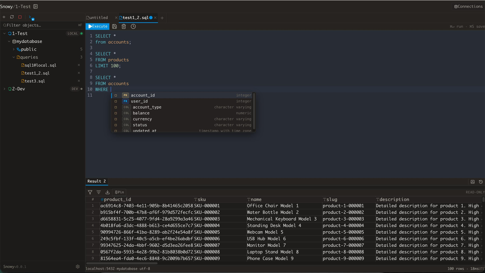
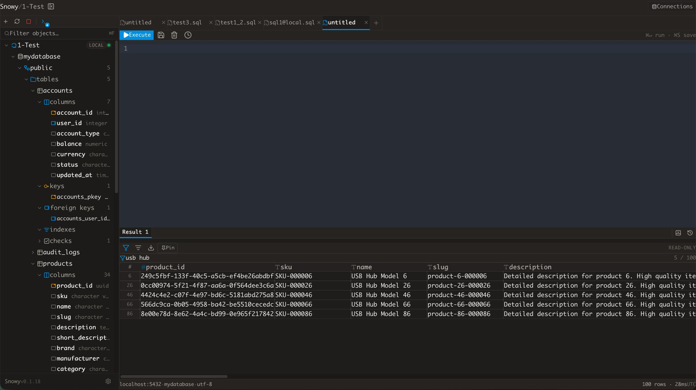
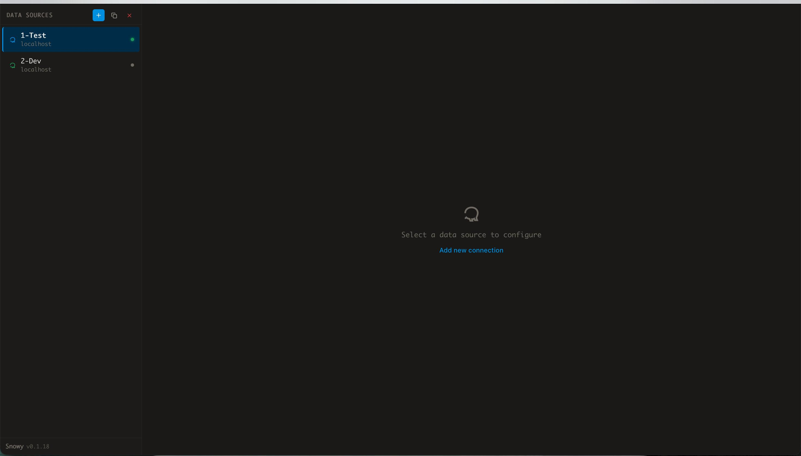

A fast, native PostgreSQL client for macOS
Keyboard-friendly. DataGrip-inspired. No Electron.

Built for developers who live in the terminal and want their GUI to keep up.
Add, edit, and duplicate PostgreSQL connections. Tag environments (local / dev / staging / prod) and test before saving.
Lazy-loading sidebar tree: datasources → schemas → tables → columns, keys, foreign keys, indexes, and checks.
CodeMirror SQL editor with syntax highlighting, DB-aware autocomplete for schemas, tables, columns, and functions.
Tabular grid with pinnable result tabs, row and duration counters, and one-click CSV export.
Per-datasource execution log. Click any past query to restore it instantly in the editor.
Save .sql files per datasource. Rename and delete from the sidebar.
Clean, focused, and stays out of your way.
Query editor & results panel

Schema explorer

Connection manager
Built with
Download the app or build from source.
# Clone & install
git clone https://github.com/nkcoder/snowy.git && cd snowy
cd frontend && npm install && cd ..
# Start in dev mode
wails dev